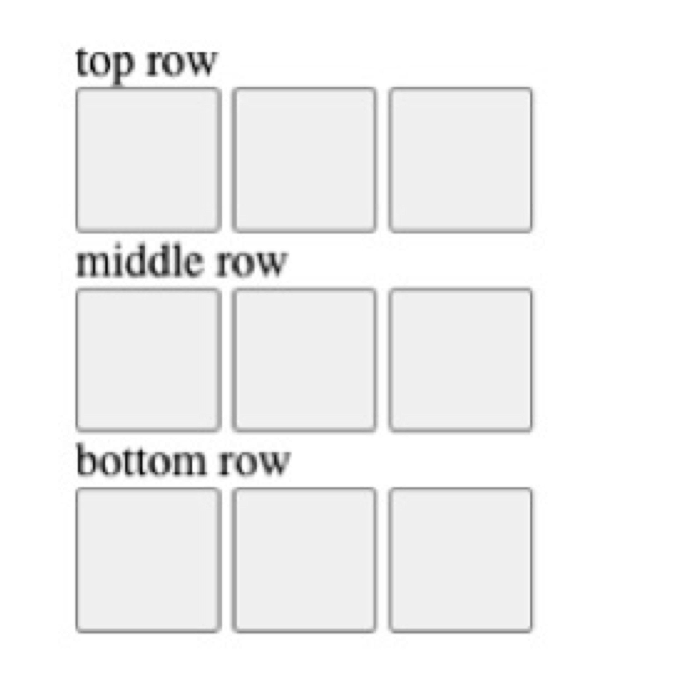

Tiny Search Engine



The Tiny Search Engine is a simple search engine developed in Javascript. This search engine demonstrates basic web development skills such as creating search indexes, search algorithms, web crawlers, ranking and displaying results. This project also includes a jest test suite.


The Tic Tac Toe Web Game is a simple implementation of the classic game using HTML, CSS, and JavaScript. This project demonstrates basic web development skills and interactive game logic. The game alternates between X and O as players take turns and will display a message when a player wins. If no player wins, the game will display a draw message.